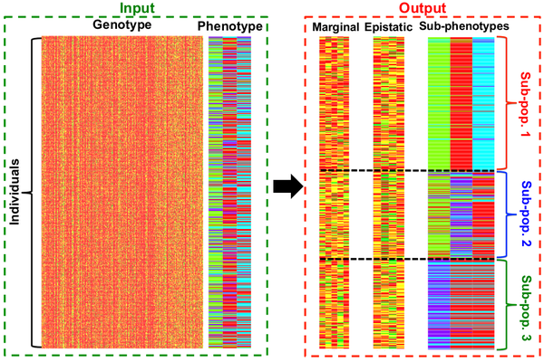

If we suppose that each disease is actually a collection of multiple diseases (easily imaginable for spectrum disorders), then identifying genetic variants that predispose one to this disease, should be done simultaneously with the identification of the disease subtypes. We have extended an epistatic model to identify disease subtypes simultaneously with marginal and epistatic variants.
Rapid advances in genotyping and genome-wide association studies have enabled the discovery of many new genotype–phenotype associations at the resolution of individual markers. However, these associations explain only a small proportion of theoretically estimated heritability of most diseases. In this work, we propose an integrative mixture model called JBASE: joint Bayesian analysis of subphenotypes and epistasis. JBASE explores two major reasons of missing heritability: interactions between genetic variants, a phenomenon known as epistasis and phenotypic heterogeneity, addressed via subphenotyping.(Colak et al, Bioinformatics, 2015)